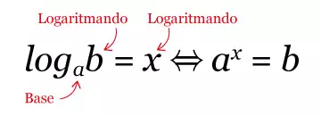

Portfólio de
Matemática
|
Me chamo Marco Antônio e nesse site eu vou falar sobre os |
Conteúdos |
|
|
Função Exponencial é aquela que a variável está no expoente e a base é sempre maior
que zero e diferente de um. |
|
A função logarítmica é dada pela lei f(x) = logax sendo < a ≠ 1. |

|
|
Capital: Representa o valor do dinheiro no momento atual. Este valor pode ser de um
investimento, dívida ou empréstimo. |
Juros Simples: |
|
A progressão geométrica – PG apresenta números com o mesmo quociente
na divisão de dois termos consecutivos.
a1.q^(n-1) q = a2/a1 q é a razão da PG. a2 é o segundo termo e a1 é o primeiro. Soma dos termos de uma PG: Sn = (a1(q^n - 1))/(q - 1) ou Sn = (a1(1 - q^n))/(1 - q) se r for < 0 Termo médio da PG: am = √(a1 . an) |
A progressão aritmética – PA é uma sequência de valores
que apresenta uma diferença constante entre números consecutivos. |
Por mais que eu tenha tirado notas mais baixas que as do primeiro módulo, acho que eu me empenhei mais nesse ciclo, eu fui atrás de ajuda em certos condeúdos que eu não tinha entendido, assisti as aulas mais focado que da outra vez. Pequei na parte de desenhar gráficos, eu ficava sem vontade quando ia desenhar.